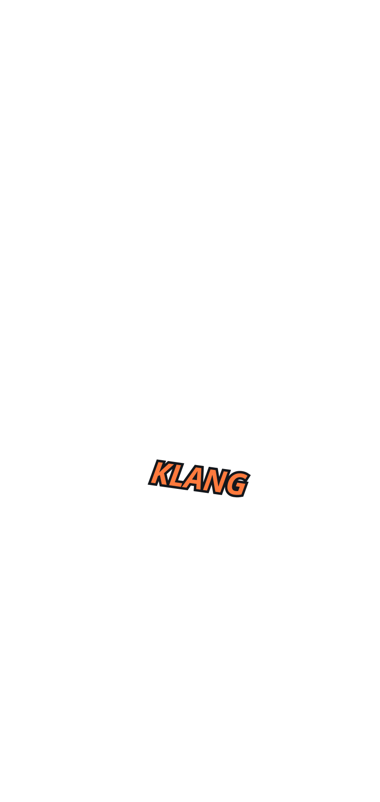
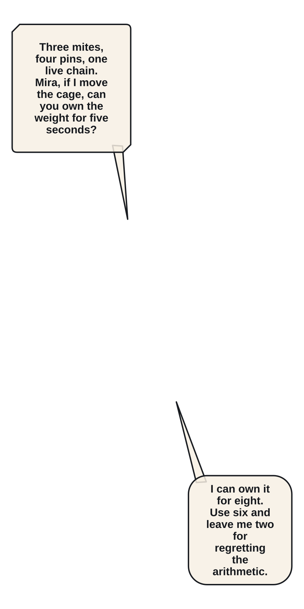
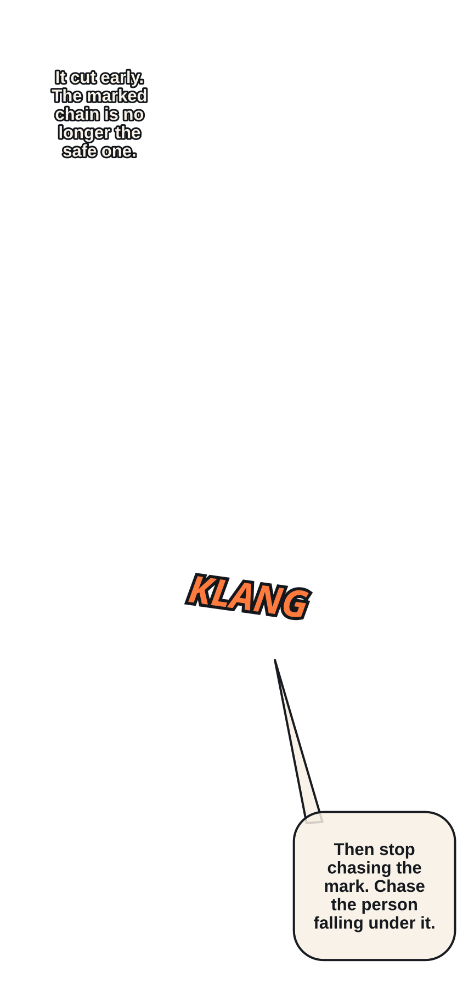
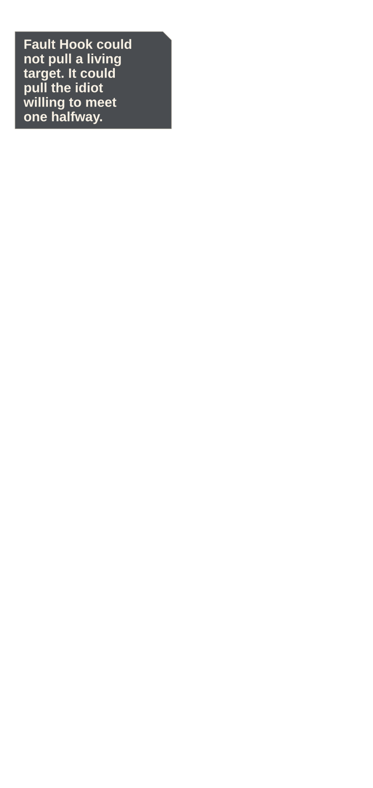
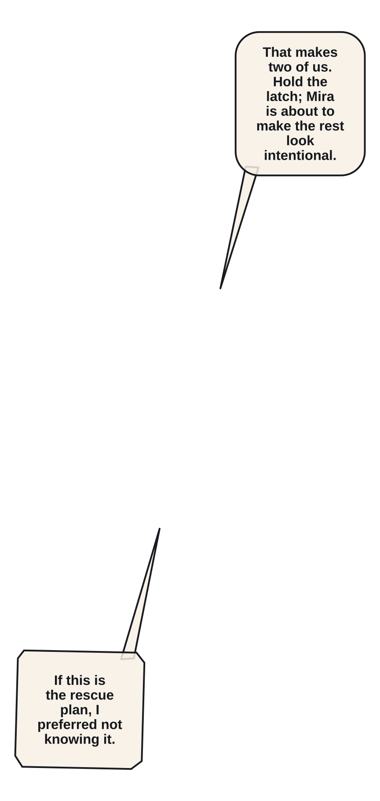
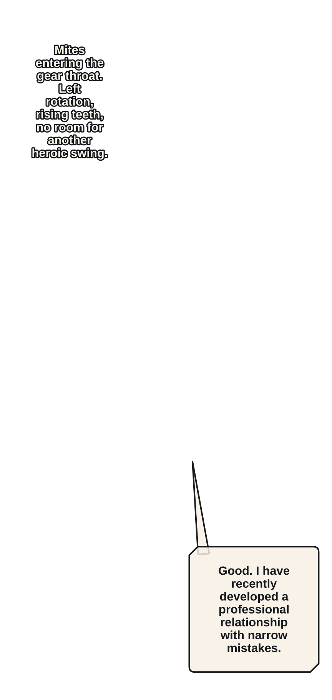
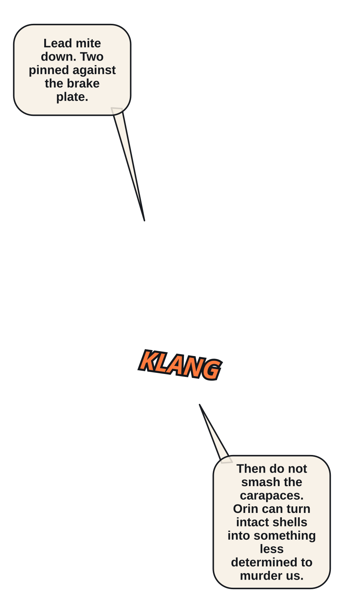

P008 · Three ivory Cinder Mites sever the cage chain pins and race along separate links.
Read in order: geography → intention → initiation → contact/interruption → consequence → response → adaptation → payoff/state.

P008 · Three ivory Cinder Mites sever the cage chain pins and race along separate links.


P009 · Wide geography fixes the cage below, Mira on the central beam, Elian above, and the mites moving toward the final pin.


P010 · Mira wedges her split shield under the cage chain and bears its weight.

P011 · Elian reads the single pin that carries the cage and marks the safe chain fault above it.


P012 · A mite cuts the marked chain early, dropping the cage and reversing Elian's plan.


P013 · Elian fires Fault Hook into the overhead fault, pulling his own body across the falling gap.

P014 · He swings beneath the beam with the hookblade held clear of the rescued delver.


P015 · Elian catches the cage latch as Mira redirects its weight into her shield anchor.


P018 · The mites flee through a vertical gear throat as Elian and Mira chase along rotating chain teeth.

P019 · Fault Step redirects Elian around one turning gear and into the lead mite's path.


P020 · Mira closes the escape with a flat shield strike; the remaining mites collapse in one readable line.